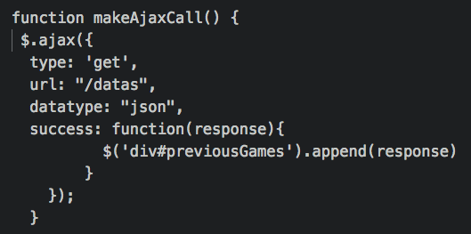
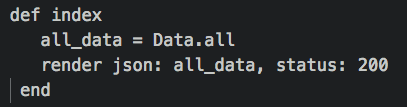

While building projects in the past there has always been something that bothered me. Having to refresh the page. Whenever data on my current page is updated, it’s annoying that I have to manually refresh the page to see the new data (and it looks horrible when you’re presenting your project to someone and are trying to impress them). I knew this problem would be solved once I learn Javascript, but what I didn’t know is the solution is called the same thing I use to wash my dishes – Ajax

Sometimes I really do wonder if the pun was intended behind the name… Get it, Ajax washes away old data on web pages, like it washes away bacteria on dishes… Yes this is exactly why Im an engineer not a comedian…
How it works?Ajax retrieves data by making an API call. This data can then be displayed directly to the HTML page without the user refreshing their browser.


Here's a quick example of using Ajax with Jquery:
On my HTML page I need a custom div, let's call it... custom div!
Now I also need some type of button that the user can press when they want new data to be displayed (or when we should use Ajax).
Show me new Data!
When the user clicks on that button, it triggers the makeAjaxCall() function in our javascript file.

The function above is making a get request to the data controller in our program. By doing so it hits the index method and retrieves all of the data in JSON format.

Now the success function inside the makeAjaxCall() function receives the JSON as the (response) variable. Then you simple append the response (which again is the JSON data that the Ajax call retrieved. Also assuming you want to show your users the raw JSON data) and the new data will appear on the HTML page without the user having to refresh their browser.
With this new method you can do alot of cool things. Most likely in a real program you would want to parse your response data and only display what's relevant to the user. Well who knew Ajax would one day be used to clean the web? (or add to it)